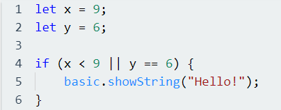
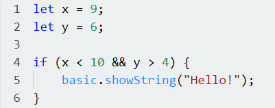
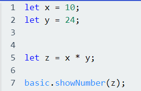

Innen programmering så er operatorer symboler som setter betingelser for en kodeblokk. For eksempel hvis vi ønsker å lage en tilstand som sier at en kodeblokk skal kjøres, hvis den ene betingelsen stemmer eller den andre betingelsen stemmer, så bruker vi || operaroteren mellom de to betingelsene som vi definerer. Det vil se slik ut:
Vi har også en operator hvis vi velger at to betingelser i en tilstand må stemme samtidig for at en kodeblokk skal kjøre. Denne operatoren skriver vi som && og det er de vi kaller for «og» operatoren. Den ser slik ut i praksis:
I koden her så ser vi at både x er mindre enn 10 og at y er større enn 4, og da vil koden inn i If-testen kjøres. If-tester og else-tester går vi mer gjennom senere. I denne oppgaven så skal vi bare ta for oss operatorer, hvorfor vi bruker dem og hvordan vi bruker dem i koding.
Operatorene som vi har innen JavaScript kan vi lage en liste over:
Siden operatorer har brukbarhet i mange ulike temaer i JavaScript, så kommer vi bare til å fokusere på matematiske utregninger i denne oppgaven. Dere kan bruke denne oppgaven senere for å få hjelp til å løse de andre oppgavene senere i opplegget.
Nå skal vi se hvordan vi kan bruke operatorer i JavaScript for å løse utregninger:
Her så ser vi hvordan vi setter opp en utregning som tar for seg multiplikasjon mellom to variabler, og vi bruker showNumber til å vise resultatet i Micro:Bit. Vi kan også skrive utregningen direkte i showNumber funksjonen ved å skrive x * y i parentesen i showNumber.
Da er du klar for denne oppgaven, løsningsforslag finnes nederst i siden. Lykke til!
Kan du gjøre noen forskjellige utregninger ved hjelp av operatorer i micro:bit?